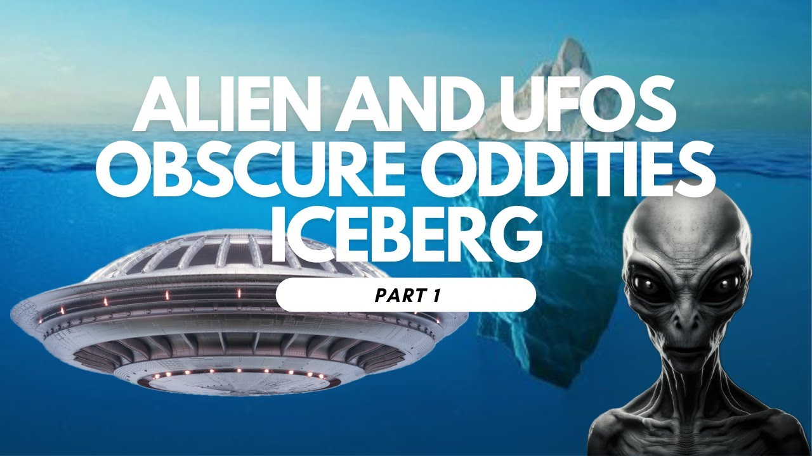

The Alien and UFO Obscure Oddities Iceberg (Level 1)

Published: 2024-01-12 · Duration: 39:16 · Channel: UAP Gerb
Description
Strange crafts, extraterrestrials, Conspiracy & more!
Please join me as we dive into the first level of the "Alien and UFO Obscure Oddities Iceberg" created by Reddit user u/Blyke-sama (link below). I had a lot of fun making this, stay tuned for parts 2-6.
0:00 Intro 1:44 Extraterrestrial Life 2:16 Crop Circles 3:34 McMinnville UFO Photographs 5:43 Alien Invasion 7:14 Panspermia 8:28 Men In Black 11:07 Nazca Lines 13:10 Betty & Barney Hill Incident 18:19 Raelism 19:32 Kardishev Scale 21:25 Phoenix Lights 23:16 The Battle Of Los Angeles 25:04 Reptilians 26:32 Pentagon UFO Videos 28:28 Area 51 30:39 Nordic Aliens 32:34 Grey Aliens 35:22 Little Green Men 36:00 Hoia Baciu 36:27 1952 Washington, D.C., UFO Incident 38:44 Closing Remarks
ufo #iceberg #alien #aliens #uap #uapnukes #icebergexplained #grusch #extraterrestrial
Transcript
Show transcript
What's up guys? It is Gerb. Welcome back to the channel. Join me today as we start a six-part series into the Alien and UFO Obscure Oddities Iceberg, posted to Reddit by user BlikeSama. Now, for those of you who don't know what an iceberg is, an iceberg is a way of categorizing the most known to least known components of an overall topic or theme. So think of an iceberg in real life how the iceberg you see above the surface is only scratching the surface of the entirety of the iceberg below the waters. So we have six layers to this iceberg. As we start with the first layers, we're going to have some pretty well known subjects, stuff you might have heard of as we get deeper into level five, six, we're going to get into more fringe theories and some stuff I might not have heard of. So it should be a learning process for all of us. I'd like to disclaim that I did not make this iceberg, so I do not have control over the entries within it. On this channel, I like to keep things as factual as I know them to the UFO UAP phenomena. So if there's something that's rather bogus or absolutely absurd, I'm going to say so. And if there's something I strongly agree with, I'm also going to say so. So let's get this started. But before we kick it off, please consider liking and subscribing. I really like making these videos. So the more support I get, the more of an urge I have to make some quality content and some good documentaries. If you haven't seen it yet, check out my first video with the documentary on the Wilson Davis Memo. It's not bad, could be better, and it will be better. So stick around. Let's get started, guys. Layer one. We'll call this the Observered Layer. Extraterrestrial life simply refers to any life that does not originate from Earth. From a single celled organism to a highly advanced civilization that can traverse the stars in a matter of hours or days, these all classify as extraterrestrial life. So not the most challenging concept to understand, but this first entry just boils down to any life, carbon, or otherwise, silicon, that does not originate from Earth. Crop circles are a phenomena in which large-scale structures are created into a field, generally a wheat field. These structures are often pretty interesting and beautiful due to their symmetry or geometric designs. And because of the complexity of the designs, a lot of people like to attribute crop circles to paranormal or extraterrestrial phenomena. Widely considered hoaxes, the craze of crop circles began in 1991, where two pranksters, Doug Bauer and Dave Chorley, took credit for making the initial wave of crop circles with planks of wood, rope, and baseball caps. Many of the seemingly bizarre creation tactics of crop circles can be explained away by skeptics, including tie an end of a rope to an anchor point on the other end to a board, which is used to crush or flatten plants. There's also a method to bend crops after a recent rain that was discovered in Hungary in 1992. The point is, while crop circles are beautiful and interesting and have wonderful designs, I think it's likely, extremely likely, these are human-made and, in my opinion, not very interesting, so I'm not going to spend more time on it. The McMinnville UFO Photographs are some of the most famous photographs of a UFO ever taken. On May 11, 1950, farmers Paul and Evelyn Trent saw something inexplicable near their farmhouse in McMinnville, Oregon. When walking back to her farmhouse, Evelyn noticed a slow-moving metallic disc-shaped object heading in her direction from the northeast. After gilling for her husband, Paul came outside, also seeing the object. He grabbed his camera and was able to take two photographs of the metallic disc near his home. Due to the popularity of these photographs, the negatives were loaned to William H. Hartman, an astronomer on the Condon Committee in 1967. The objective of the Condon Committee outside of the University of Colorado Boulder was to investigate UFOs and was a government-funded UFO research project. I'd like to do another video on the Condon Committee because the program was basically told to explain UFOs away as swamp gas and weather balloons, but Hartman found some extremely interesting oddities with these photographs. Hartman was impressed with the images, noting that the brightness of the underside of the craft appeared to be lighter than the underside of the oil tank also seen in the images. He said this was possibly due to atmospheric extinction, the same effect that makes distant mountains appear washed out and blue in images. This effect suggested that the object was further from the camera than the tank, not a small, local object hanging from a string like some debunkers like to claim. He wrote to the Condon Committee that, quote, this is one of the few UFO reports in which all factors investigated, geometric, psychological, and physical appear to be consistent with the assertion that an extraordinary flying object, silvery, metallic, disc-shaped, tens of meters in diameter and evidently artificial flew within sight of two witnesses. Perhaps we need some outside universal threat to make us recognize this common bound. I occasionally think how quickly our differences worldwide would vanish if we were facing an alien threat from outside this world. Alien invasion simply refers to a worldwide invasion by an extraterrestrial species. Now, I like to think that an invasion by an extraterrestrial species is pretty unlikely. It's impossible, of course, to attribute human motives to a non-human intelligence, but if extraterrestrials have the ability to traverse the cosmos and warp spacetime, it seems rather idiotic that such an advanced species would be warmongering like we are. In my opinion, humans would be more interesting to study from a distance. A hairless primate that has recently discovered how to harness nuclear technology and is at the foot of exploring our solar system or destroying ourselves. It's a pretty interesting place in which our species is residing. Perhaps this is something like the great filter that the Fermi Paradox talks about, but alien invasion, scary, but likely, in my opinion, no. Panspermia is a theory that life exists throughout the entirety of the universe in microbial or cellular form and is distributed by space dust, meteors, asteroid comets, and planetoids. Let's tackle this with an example. One possible origin of life here on Earth is a result of panspermia. Millions and millions of years ago, Mars had life, whether this was single cellular or multicellular, we don't know. But if panspermia occurred, that means an asteroid or a meteor or something large impacted Mars' surface. This kicked up much Martian soil and dust containing microbes. That dust and particles then made their way over to Earth, where the seeds of life were carried from one planet to another. There are three types of panspermia, lithopanspermia, which means life being carried from one solar system to another, ballistic panspermia, which is life carried from one planet to another within the same solar system, and directed panspermia. This would be human sending life to other planets, essentially. The Men in Black are a shadowy organization featured prominently in Ufology and UFO folklore. Essentially, the Men in Black are suit clad government agents who are used to question, interrogate, threaten, harass, and sometimes assassinate, experiencers of UFOs and extraterrestrials. The legend of the Men in Black can be traced back to June 27, 1947. Harold Dahl was on a conservation mission on the Puget Sound near the eastern shore of Washington's Mowry Island. I believe he was gathering logs or just doing some outdoor work when he saw six donut-shaped obstacles hovering about half a mile above his boat. Some debris fell from the obstacles, a piece of which struck and killed his dog. Dahl was able to take pictures of the craft and record some footage. The following day, Dahl was visited by a man in a black suit. The two had to a local diner where the man was able to recount in extreme detail what Dahl had witnessed the night before. The man said, quote, what I have said to you is proof to you that I know a great deal more about this experience of yours than you will want to believe. Dahl was then told not to speak of the incident. If he did, bad things would happen. As a final statement on the Men in Black, I'd like to say that these guys don't always need to be in suits, okay? What you could consider the Men in Black, people opposing any sort of discussion or sharing of information or footage of UFOs could also just be described as men in military fatigues. This is what happened during the Roswell incident with Jesse Marcell and the girl whose fireman father witnessed the crash craft as well as Lieutenant Robert Jacobs in his footage of a UFO disabling a nuclear warhead. So the men can be in suits. That dives a little bit more into the paranormal and weird things or just men in military fatigues blocking any sort of conversation or spreading of information. I would like to mention I think these suit clad men in black are a total hoax and distract from the actual validity of people within the United States government and high ranking officials trying to stop the spread of legitimate UFO sightings and footage. So I am not a fan of the suit clad men in black. I think it's a little bit ridiculous. The Nazca lines. If you have seen ancient aliens on the history channel, I'm willing to bet you have heard of the Nazca lines. If not, no worries. I got you. The Nazca lines are a group of geoglyphs made in the soil of the Nazca desert near southern Peru. It's estimated that most of these pictures depicting animals were created between 500 BC and 500 AD. These large geoglyphs were made by making depressions or shallow incisions in the desert floor, removing stones and pebbles, and leaving different colored dirt to be exposed. Now seen from the ground, the Nazca lines appear as nothing more than lines. But when viewed from an aerial position, the Nazca lines then start to depict the beautiful creatures that they're made to represent. While it's highly likely that the Nazca lines were used for ancient religious purposes, such as offerings to gods who would be able to see the lines from the heavens or other varying rituals, author Eric Von Daniken in his book Chariots 1968 proposed that the Nazca lines were in fact used as landing sites for UFOs. He theorized that the shapes and lines were made by extraterrestrials and were created to help steer their spaceships to land safely. Von Daniken claimed the patterns at the site looked very similar to modern airport designs and used this as pieces of evidence to prove that extraterrestrials used this Nazca plane as a landing space for their spacecraft. I of course favor the prosaic explanation here. I think the Nazca lines were likely used for religious purposes and are also observable from nearby hills and mountains, not just from the air, from airplanes or spacecraft. But it is fun to think about the ancient astronaut theory, I mean that's why ancient aliens has like 30 seasons. The Betty and Barney Hill Incident is one of the most famous alien abduction stories in US history. Their story begins at around 1030 on September 19th 1961. The couple was driving back from a vacation near Niagara Falls in Montreal just south of Lancaster, New Hampshire. Upon driving, Betty observed a bright point of light in the sky that moved just below the moon and the planet Jupiter. Betty noticed the light moved erratically and grew bigger and brighter at various times, and Betty urged Barney to stop the car so the two could take a closer look. Through binoculars, Betty noticed an odd shaped craft travel across the face of the moon with flashing multicolored lights. Initially, Barney thought this may have been a commercial airliner, but as the craft turned towards him and started rapidly descending, he quickly changed his mind. The couple then continued driving, observing the well illuminated craft moving erratically back and forth in the night sky. The object rapidly descended toward the hill's vehicle, causing Barney to stop the car in the middle of the highway. The silent craft hovered about 80 to 100 feet above them, reminding Barney of a large pancake. Barney then claimed to have seen 8 to 11 humanoid figures who were all peering out of the craft's windows looking at him. All but one figure then retreated back into the craft. The one remaining figure communicated with Barney telepathically, giving him a message saying, quote, Stay where you are and keep looking, end quote. Now it's worth mentioning that later on when Barney reported this abduction to the National Investigations Committee on Aerial Phenomena, NICAP, he explicitly stated, quote, Beans were somehow not human. Red lights then began to telescope out of the sides of the craft and a long structure descended from the bottom of the craft, approaching Barney. The couple then arrived home, perplexed, noticing that their memories became incomplete and fragmented after observing the craft buzzing towards them. About 10 days after the incident, Betty began having strange vivid dreams for five successive nights. Within these dreams, she was escorted by small humanoids five to five feet four inches tall with Barney walking behind her. She recalls after being walked with the humanoids being set back by her car, where the leader suggests they wait for the craft's departure. The hills then sought hypnosis to explain their missing time after their encounter. Seen as their 178 mile drive home from their vacation should have taken about four hours, but their drive took seven, meaning there were three hours of missing time where they could not explain what happened. Barney's first session of hypnosis is extremely disturbing. He recalls running from the UFO back to his car. He recalls driving away from the UFO, but felt an irresistible urge to pull off the road and drive into the woods. Upon doing so, he cited six figures standing on the dirt road. He described these figures very similar to what occurred in Betty's dreams. Barney said the beans stared into his eyes with a terrifying effect. Barney said, quote, Oh, those eyes, they're in my brain. And, quote, I was told to close my eyes because I saw two eyes coming close to mind. And I felt like the eyes had pushed into my eyes, end quote. And finally, quote, All I see are these eyes. I'm not even afraid that they're not connected to a body. They're just there. They're just up close to me, pressing against my eyes, end quote. Betty's recollections from hypnosis were remarkably similar to Barney's. In her hypnosis session, she recalls being aboard the craft, talking about the technology she saw and a star map she observed within what she guessed was the craft's control room. Now, this star map is pretty controversial, as some interpretations show it bearing soul, our sun, as well as the creatures coming from the Zeta reticuli system. And there has been a back and forth into this star maps authenticity, including a rebuttal by Carl Sagan in the 1980s cosmos. But even members on the Condon UFO report, as mentioned earlier, said the odds of this being a random configuration of stars were quote, at least 1000 to one against, end quote. There's a lot more to the Betty and Barney Hill incident, a lot more to study and a lot more to talk about. I can't give it justice in this couple minute segment, but that's a brief overview. Rawleism is a UFO religion dating back to the 70s in France, founded by Claude Vorihon. The religion teaches that an extraterrestrial species known as the Elohim created humanity using their advanced technology. Now, key historical and religious figures such as Buddha, Jesus, and Muhammad have been mistaken for gods throughout history, even though they were just Elohim. The Elohim created 40 human Elohim hybrids who have served as prophets throughout the history of humanity. The religion believes that since the bombing of Hiroshima in 1945, humanity has entered an age of apocalypse and will destroy itself with nuclear annihilation unless it finds a way to peacefully harness these technological developments. Because of this upcoming apocalypse, the Rawleians have sought to build an embassy for the Elohim that incorporates a landing pad for their spaceship. This religion slash cult isn't harming anybody, so it's kind of fun to read about, and it's not as dangerous as some other UFO death cult. So yeah, fun little read. The Kardashev Scale is a fascinating method of measuring the civilization's level of technological advancement based on the amount of energy the civilization is capable of harnessing. The Kardashev Scale was first proposed by Soviet astronomer Nikolai Kardashev in 1964. There are traditionally three types of Kardashev civilizations. Type one, a planetary civilization, is able to harness all available energy from their planetary system. This gives the civilization control over the entire planet's natural forces, including weather and other various phenomena. A type two is a stellar civilization, a civilization that is able to harness all available energy from their host, star. This is done through hypothetical methods such as a Dyson Sphere, which we'll touch on later. And the type two civilization is able to occupy other planets and other moons within their system. Finally, a type three civilization is known as a galactic civilization. A galactic civilization is able to control energy on the scale of their entire host galaxy. Type three civilizations are able to travel across, stars to stars, and colonize their entire home galaxy. Now the Kardashev Scale increases to a Kardashev four and a Kardashev five, in which a civilization is able to control the total energy output of a galactic cluster, and a type five where the civilization can control the energy output of an entire universe, but we don't know if that's theoretically possible. You may ask yourself where does Earth and humans fall on the Kardashev Scale? We are currently about a 0.7 rating on the Kardashev Scale. The Phoenix Lights refers to a mass UFO sighting in a boomerang or V formation over Phoenix, Arizona in March 13 1997, and persists as one of the largest and most perplexing mass sightings of a UFO in US history. The sightings of hundreds of people are often explained away by the official narrative that these sightings was due to flares and flying formations of A-10 Thunderbolt 2 aircrafts. But the governor of Arizona himself, Fife Simen, observed the event and attempted to make an official inquiry, but was denied. He's quoted as saying, quote, I'm a pilot, and I know just about every machine that flies. It was bigger than anything I've ever seen. It remains a great mystery. Other people saw it, responsible people. In 2017, Simington also wrote an editorial piece for CNN which he further discussed his experience with the Phoenix Lights. He said he observed a large delta-shaped craft which moved silently in the sky. He said it was dramatically large with, quote, very distinctive leading edge with some enormous lights, end quote. He expressed his dissatisfaction in the Air Force's official explanation of test flares and claimed he did in fact see a large craft. The truth here, I'm not sure. The flare explanation can be valid for some sightings such as Jeremy Corbell's Palm Spring UFO footage in 2023. But due to the witness testimony of hundreds of people, including the governor of Arizona himself, I'm not sure we can rule out the possibility a strange and anomalous craft flew over the city of Phoenix, Arizona. The Battle of Los Angeles is a famous event that occurred in the city of Los Angeles, California, on late February the 24th of 1942. Fresh off of the attack on Pearl Harbor and entry into World War II, the U.S.'s war nerves were at a relative all-time high, expecting any time an attack from Japan on the western coast. Over a number of hours, multiple radar signatures were detected, sending the local military into a scramble. An impending threat of attack by the Japanese was expected, prompting an aerial bombardment. One quote from the scene says, quote, the air erupted like a volcano, end quote. Five civilians died in the aerial bombardment, three from car accidents, two from heart attacks. But later on, it was determined that the reasoning behind the aerial bombardment was war nerves or a meteorological balloon. A photo was then published in the LA Times on February 26th of 1942. The photo show searched lights focused on what looks to be a saucer-type spacecraft. However, it's controversial that this photo may have been altered, heavily altered, and thus might not be an actual representation of what exactly the search lights and artillery cannons were shooting at. But this is an interesting story. The Battle of Los Angeles is actually one of the cases that got me into the study of UFOs as a young kid. Nowadays, I don't think it's that interesting. I think that there's probably a likely prosaic explanation here, but I have a lot of nostalgia for this case. But interesting nonetheless. The reptilian theory is a conspiracy theory that was proposed by David Ike. Essentially, the reptilian theory talks of a shape-shifting reptilian race of aliens that is evil and slowly taking control of Earth by taking on human form and gaining political or social power to manipulate human entities. First introduced in 1999 in Ike's book The Big Secret, reptilians are tall, blood drinking, shape-shifting reptilian humanoids from the Alpha Draconi star system hiding in underground bases and in plain sight. These reptiles have a conspiracy against humanity, whether that means to take over the world, subjugate humanity, or whatever. I'm not quite sure, but numerous people including the Rothschilds, Bush, and British royal family are reptiles, according to Ike. There are up to six. The reptilian theory has become one of the world's most popular conspiracy theories, with many internet users trying to find videos of political leaders that have discrepancies in their eyes or lizard eyes, as well as a lot of public places leaning into the conspiracy. For example, I live in Denver, and the Denver International Airport, which has been shrouded in conspiracy, has really leaned into the whole reptilian thing with a lot of posters of reptiles and such. The Pentagon UFO videos finally were eaten. The Pentagon UFO videos refer to a series of three videos taken by the DoD, Air Force, or military regarding UFOs that were classified, but released due to the efforts of Llewella Zondo and Chris Mellon, and published via The New York Times with Leslie Keane and Ralph Blumenthal. These three videos show anomalous craft taken on FLIR footage, labeled Go Fast, Gimbal, and FLIR. I'd like to focus on the Gimbal video as shown here, which was taken in 2015 off the coast of Florida. A targeting pod on an F-A-18 captured this anomalous object, which the pilot said was able to move with no visible propulsion method and stand stationary in severe winds. Now, unfortunately, there's a clip in part of this video that has not been declassified, and this is confirmed by the pilots who recorded this video, as well as Christopher Mellon. But within the rest of the video, this craft rendezvous with a series of other crafts and takes a V formation. That's extremely strange, and I would give anything to be able to see that footage, but clown debunkers like Mick West like to claim that the Gimbal video is a bird, or a jet moving away from the F-A-18, and thus is a lens artifact on the FLIR footage. I like to trust the eyes of the trained pilots who have recorded these videos, not some dude who sits in his basement and tries to debunk every single thing that ever exists on UFOs. So, very curious video. I love this. This is a classic. All three are classics. Area 51. Now, I'm not going to spend a lot of time on Area 51, because I know all of you have heard of it, and I'd like to make a video itself on Area 51, but we'll give a summary. Area 51 is the common name for a highly classified U.S. Air Force base in the Nevada desert, near Groom Lake and former nuclear test ranges. For decades, Area 51 went unacknowledged and was associated with conspiracies of UFOs and experimental aircrafts. In fact, Area 51 wasn't officially acknowledged until 2013, where the CIA publicly acknowledged the base through a Freedom of Information Act request. Many believe that Area 51 isn't just home to experimental aircraft tests like the U-2 tests and reverse engineering foreign adversaries like the MiG jets, but is also housed for reverse engineering and test flights of UFOs. While I don't really want to cover that on this video, I will leave you with this. Pictured on screen is a project patch from Area 51, supplied by Eric Tabor. Eric Tabor is an official UFO whistleblower who submitted a memorandum for record to Arrow, the all-domain anomaly resolution office, that this patch belonged to his great uncle, Sam Yerkuhart. I'm not sure how to pronounce his name, it's a little tough to spell. But his great uncle divulged to him that while working at Area 51 as a contractor, he was privy to learn that the base housed an egg-shaped UFO that was found intact in the Nevada desert. It's worth noting that Sam was the head of security for an engineering group, the radar cross-section training team, so it's not wild to think he was privy to some strange information. True or not, this is extremely interesting as Tabor has submitted a legal document to Arrow testifying that this is, in fact, true. So maybe Area 51 has housed UFOs. But we'll save that for another time. The Nordic aliens are a supposed race of extraterrestrial humanoids who come from the Pallades system and resemble Nordic Scandinavians. The Nordics are often taller than regular humans, six to seven feet tall, have blue eyes, fair skin, and long blonde hair. Throughout the 1950s, many people alleged to have encounters with the Nordic aliens claiming they were benevolent and magical, often caring about humans and the world's prosperity. The Nordics were able to communicate with humans via telepathy and possessed a cool calming demeanor that proved to be youthful, affectionate, and kind. The Nordic aliens are part of a galactic federation and traverse the cosmos from their spherical to cigar shaped crafts. Interestingly enough, if you've heard of the abduction case of Travis Walton, a film was made about him called Fire in the Sky, I'd recommend checking it out. But Travis Walton has a very curious abduction story that has a lot of intriguing aspects to it, let's just say that. And from his testimony, when he's taken aboard a UFO craft, he encounters several types of beings, such as the common graze, including a Nordic like race of tall humanoids. Are the Nordic aliens real? I don't know. I don't like to focus too much on abduction stories or extraterrestrial races. I just like to focus on the fact there is something in our sky that's of non human intelligence or multiple things in the sky of non human intelligence and start there. We got a lot to work through before we start deciphering what exactly these things are if they're even extraterrestrials. The graze are the archetypal extraterrestrial and most famous depiction of extraterrestrials ever. Often just referred to as graze, graze are typically gray skinned, small humanoid beings between three and five feet tall, completely hairless, with enlarged heads, sometimes a small slit like mouth, sometimes no mouth, sometimes just nostrils, sometimes no nostrils, and large black piercing eyes. The graze often lack muscular definition and have a visible skeletal structure. I want to stress with their head size, their head is usually comically larger than their body. Now the gray can possibly be traced all the way back to 1917, where occultist Aleister Crowley performed a black magic ritual and was able to contact a bean named Lamb across space and dimensions. But I like to look at the fact the graze really became popular in the 1947 Roswell crash. These were the supposed beans that were found dead or dying by their crashed craft a little bit northwest of Roswell, New Mexico. I'd like to make a long video on Roswell because it's fascinating, but also remember Betty and Barney Hill. These small humanoid beings match the depiction of graze as well. In fact, graze are so commonly involved with alien abductions. Graze make up about 50% of claimed abductions or sightings in Australia, 73% in the US, 48% in continental Europe, and 12% around the UK. There are many interesting theories about what exactly the gray is, some of them being the graze are basically biological drones utilized by other extraterrestrial civilizations. Graze are often described as emotionless, kind of hive-minded and worker bees, so this could imply that they're just biological drones. Graze sometimes are often associated with future humans as well, claiming that as humans evolve we rely less on our muscles, spend more time indoors, receive more receding hair across our bodies, get enlarged eyes from looking at screens. And that's interesting to think about too. I'm not sure about that I like it, but also that graze are just humanoid figures that evolved on a planet with somewhat similar conditions to Earth. Regardless of where they originate, the graze are fascinating and I somewhat believe some sort of non-human intelligence on this planet resembles the classic gray. Little green men, I'm not going to spend time on this one, especially since little green men are essentially green graze, and the term little green men is often used by politicians to kind of shrug off and make fun of any UAP or UFO sightings. You'll often time see Pentagon conversations or official military talks when talking about UFOs, say we found no evidence of little green men, so I just have no interest entertaining this entry. I understand I'm getting a little bit pressed about this, but yeah, I stop here. Hoya Bashu is essentially the most haunted forest in the world. It's nestled in Romania and has many unexplicable and strange phenomena such as UFO sightings. I've never heard of this forest. I really don't have much to say about this entry besides apparently in the 1960s there have been UFO sightings in the forest and images taken. And lastly we have the 1952 Washington DC UFO incident. This mass sighting of UFOs occurred over the weeks of July 19th through the 20th and July 26th through the 27th of 1952. At 11.40 pm on Saturday July 19th 52 Edward Nugent an air traffic controller at Washington National Airport spotted seven objects on his radar. He knew immediately that this was a very strange situation as the crafts moved erratically compared to any normal aircraft. Nearby two controllers at the national airport's radar equipped control tower looked outside and saw a hovering bright light in the sky which departed at incredible speeds. At this point other objects appeared in all sections of the radar scopes and they moved over the White House the U.S.'s capital. Jets were scrambled from nearby Newcastle Air Force Base in Delaware to investigate the six fast moving bright lights over the nation's capital. The jets found no such objects they eventually ran out of fuel and had to return to their bases. Later on on July 26th 1952 the event occurred again where a pilot and stewardess on a national airline's flight into Washington DC observed erratic moving lights above their aircraft. Within minutes both radar centers at national airport and Andrews Air Force Base tracked the objects. The occurrence made front page headlines and caused a great deal of concern for President Harry Truman who made personal calls to his Air Force aides to find out what the heck happened as well as garnered much CIA interest. In response to this event the Robertson panel was formed to quote strip the unidentified flying objects of their special status they have been given in the aura of mystery they have unfortunately acquired end quote. So the 1952 UFOs over DC directly leads to the decades long stigma around UFOs and this is very interesting and I'll make another video about this. Well my friends that is layer one to the alien and UFO obscure oddities iceberg. I hope everybody enjoyed this first layer a ton of interesting entries looking down the list we're going to have a lot more extremely interesting things to cover and I cannot wait. Remember if you liked the video consider tossing out a subscription and a like doesn't cost you nothing and it allows me to make more interesting videos like this so stay tuned friends I'm going to start part two immediately.
Entities
People (48)
- Air Force
- Aleister Crowley
- Alpha Draconi
- Barney Hill
- Barney Hill Incident
- Buddha, Jesus
- Carl Sagan
- Chris Mellon
- Christopher Mellon
- Claude Vorihon
- Condon UFO
- Dave Chorley
- David Ike
- Davis Memo
- Doug Bauer
- Edward Nugent
- Eric Tabor
- Eric Von Daniken
- Evelyn Trent
- Groom Lake
- Harold Dahl
- Harry Truman
- Hoya Bashu
- Jeremy Corbell's
- Jesse Marcell
- Kardashev Scale
- Leslie Keane
- Llewella Zondo
- Los Angeles
- Mick West
- Mowry Island
- New Hampshire
- New Mexico
- Niagara Falls
- Nikolai Kardashev
- Nordic Scandinavians
- Pearl Harbor
- Ralph Blumenthal
- Robert Jacobs
- Sam Yerkuhart
- The Kardashev Scale
- Travis Walton
- U.S. Air Force
- United States
- Von Daniken
- Washington DC
- Washington National Airport
- William H. Hartman
Places (2)
- Arizona
- Peru
Organizations (7)
- Andrews Air Force Base
- CIA
- Newcastle Air Force Base
- the Air Force's
- the Condon Committee
- the National Investigations Committee on Aerial Phenomena
- the University of Colorado Boulder